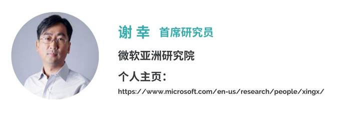

Contents
Activity
ACM SIGSPATIAL中国分会2020奖励委员会成立
为积极参与ACM中国发起的新星奖和优博奖，ACM SIGSPATIAL中国分会已启动本SIG的新星奖和优博奖的推选，推选截止日期为2020年8月15日，具体信息请查看《2020年度ACM SIGSPATIAL中国优博奖和中国新星奖推荐工作》。
为配合本次评选活动高质量开展，ACM SIGSPATIAL中国分会特邀请国内外知名学者成立了“ACM SIGSPATIAL中国分会2020届奖励委员会”（以下简称奖励委员会）。奖励委员会从国内外计算机和地理信息领域知名学者中组建，由ACM SIGSPATIAL中国分会主席孟小峰教授任命，对2020年度优博奖和新星奖评审的相关工作负有评定、审议、评估等职责。奖励委员会将秉持“公平、公正、科学规范”的评选原则优中选优，希望通过ACM SIGSPATIAL中国分会优博奖和新星奖的评审能进一步促进我国空间信息研究方向的创新和进步。
“新星奖”奖励委员会主席和委员名单
评委主席
评委委员（按姓名拼音顺序排序）
“优博奖”奖励委员会主席和委员名单
评委主席

评委委员（按姓名拼音顺序排序）
申请材料寄送：
1. 请将新星奖候选人材料发送至陆老师
邮箱：minlu@szu.edu.cn和 lumin.vis@gmail.com （为防止丢邮件，请同时向这两个邮箱发送材料）
邮件标题为"ACM_SIGSPATIAL_ChinaAward_新星奖_候选人学校_姓名"
2. 请将优博奖候选人材料发送至潘老师
邮箱： smallpx@stdu.edu.cn和 smallpx@hotmail.com（为防止丢邮件，请同时向这两个邮箱发送材料）
邮件标题为“ACM_SIGSPATIAL_ChinaAward_优博奖_候选人学校_姓名”